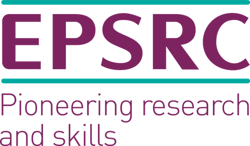

|
Eurographics Association - Eurographics is the only truly
Europe-wide professional Computer Graphics
association. |
|
|
University of Nottingham - The University of Nottingham is a
pioneering university providing an exceptional research-led education and an outstanding student experience.
|
|  |
EPSRC - The Engineering and Physical Sciences Research Council
is
a British Research Council that
provides government funding for grants to undertake research and postgraduate degrees in engineering and the
physical sciences. |
|
MDPI - A pioneer in scholarly open access publishing, MDPI has
supported academic communities since 1996. Based in Basel, Switzerland, MDPI has the mission to foster open
scientific exchange in all forms, across all disciplines. |
|
Visual and
Interactive Computing Group, Swansea University -
The group follows an ambitious and curiosity-driven programme to develop new algorithms and methods, as well
as advanced software techniques and tools, for these areas. It has a number of on-going collaborative
research projects with scientists from around the world and is actively involved in knowledge transfer and
industrial applications. |